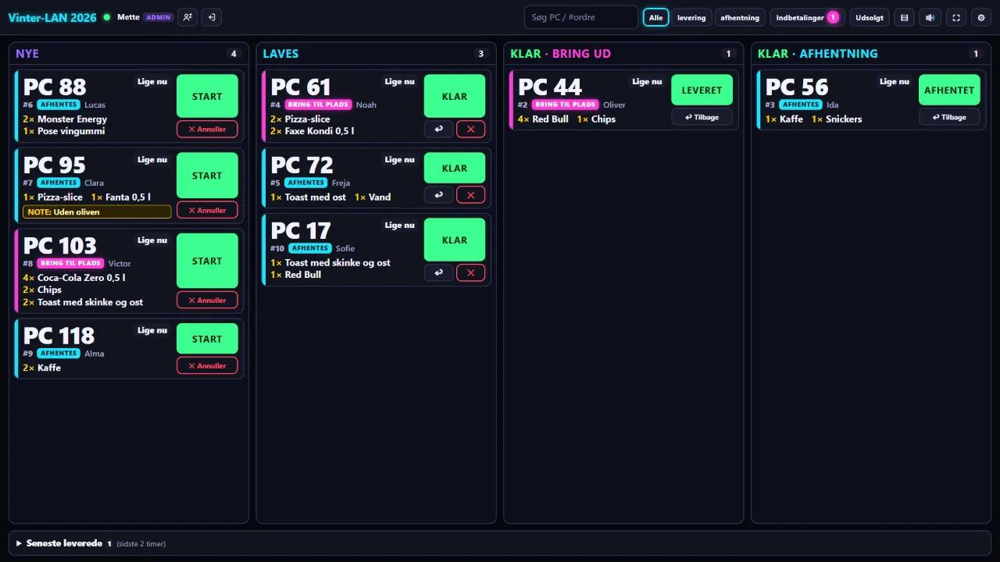
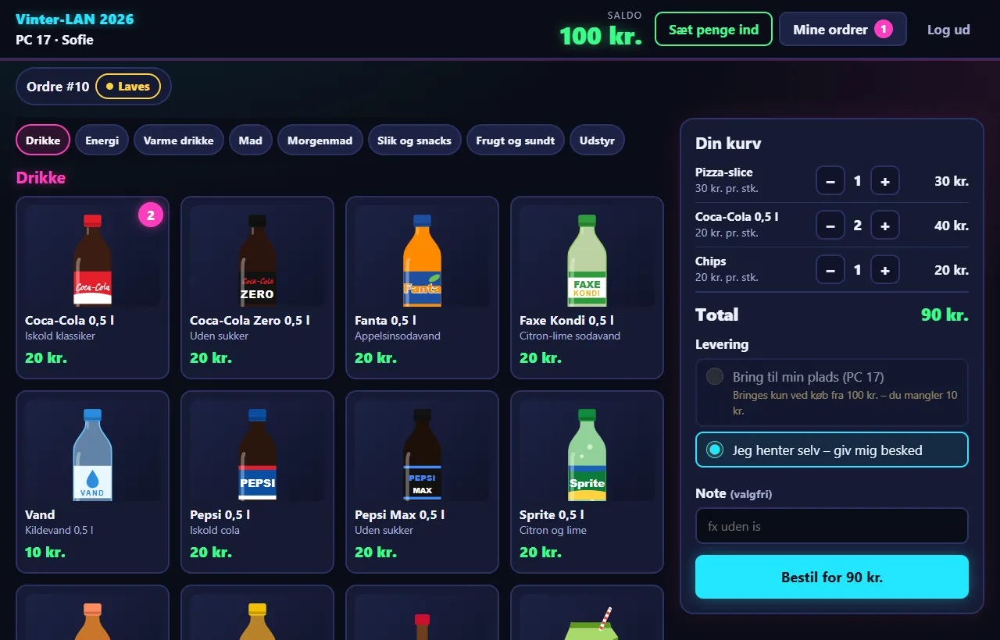
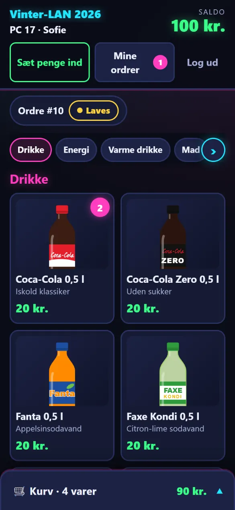
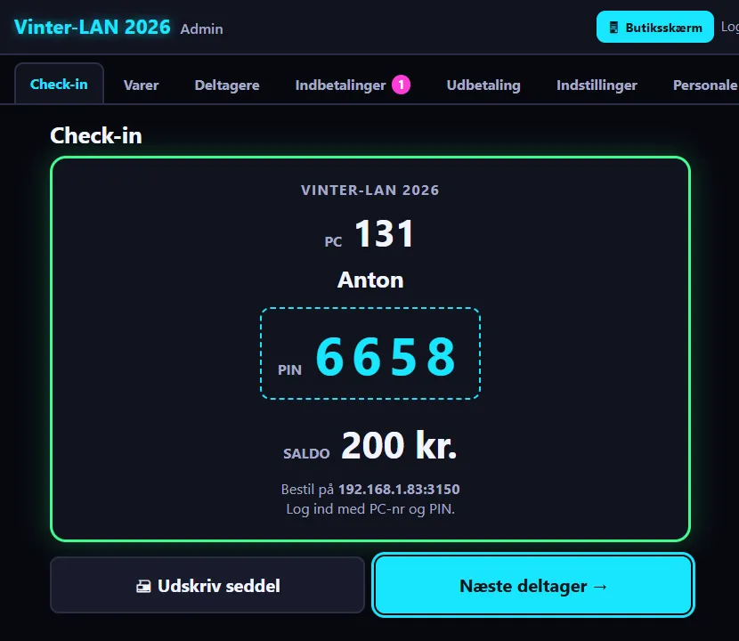
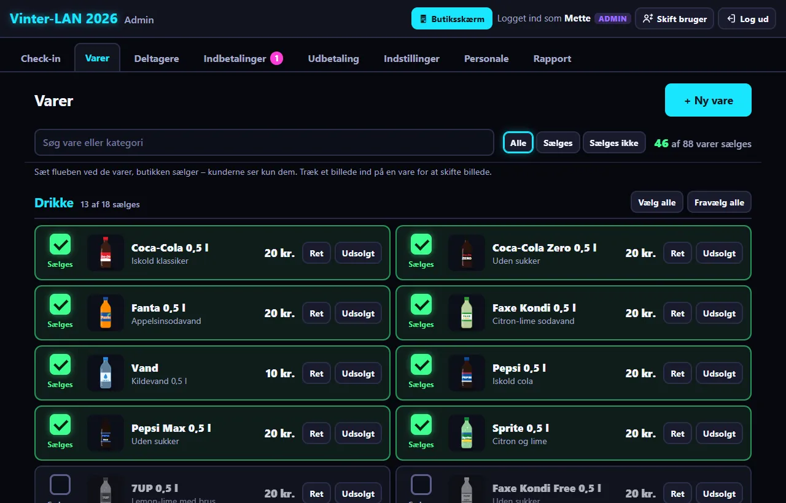
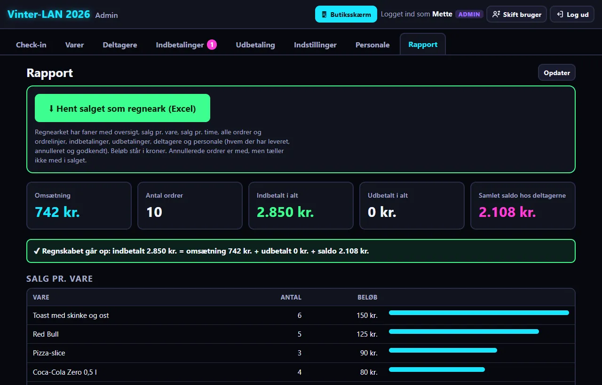

Kiosken til jeres LAN-party
Træf-butik er et bestillingssystem til computertræf. Deltagerne bestiller sodavand, slik og toast fra deres egen PC og betaler med en forudbetalt saldo. Bag disken ser butikken ordrerne live. Det hele kører på én bærbar og virker uden internet.

Slut med kø, sedler og byttepenge
Deltagerne behøver ikke at forlade pladsen midt i et spil. De bestiller i browseren, og crewet kan se med det samme, hvad der skal laves.
Check-in ved indgangen
Crewet skriver PC-nr og navn og vælger evt. et startbeløb. Deltageren får en seddel med PIN og adressen til butikken.
Bestil fra pladsen
Deltageren logger ind med PC-nr og PIN, lægger varer i kurven og vælger "Bring til min plads" eller "Jeg henter selv".
Butikken ser det live
Nye ordrer dukker op med lyd på skærmen bag disken. Start → Klar → Leveret, og kunden får besked, når ordren er klar.
Alt, hvad kiosken skal bruge
Forudbetalt saldo
Deltagerne sætter penge ind med MobilePay eller kontant, og butikken godkender. Restsaldoen udbetales, når træffet slutter.
Live butiksskærm
Store PC-numre, kolonner pr. status, lyd og blink ved nye ordrer. Kan læses på afstand bag disken.
Bring til plads
Levering til bordet fra et beløb, du selv vælger, eller "Jeg henter selv". Kunden får lyd og besked, når det er klar.
Personale med roller
Hver i crewet har sit eget login som admin eller ekspedient, og systemet husker, hvem der gjorde hvad.
88 varer med billeder
Sodavand, energidrik, kaffe, toast, morgenmad, slik og frugt. Sæt flueben ved det, I sælger, ret priser, eller tilføj jeres egne varer.
Regnskab og regneark
Rapport med omsætning og salg pr. vare, og hele salget som Excel-regneark. Systemet tjekker selv, at regnskabet går op.
Bestil uden at forlade spillet
Store knapper, varebilleder i et gitter og kurven i siden. Det tager få sekunder at bestille, også på mobilen.
- Log ind med PC-nr og PIN – ingen konti eller e-mails
- Se saldo og ordrens status live
- Lyd og besked, når ordren er klar
- Virker på computer, tablet og mobil


200 deltagere ind på ingen tid
Ved indgangen skriver crewet PC-nr og navn og trykker på et startbeløb. Systemet laver selv en PIN og udskriver en lille seddel.
- Hurtigknapper til 0, 100, 200 og 300 kr.
- MobilePay-indbetalinger godkendes med ét klik
- Glemt PIN? Nulstil den på et øjeblik
- Restsaldo udbetales, når træffet slutter

Mørkt LAN-look, stor tydelig tekst
Sådan ser det ud under et træf: butiksskærmen bag disken og admin-siden til crewet.


Klar til træffet på 5 minutter
Alt er med i zip-filen, også Node.js. Du skal ikke installere noget.
- Pak zip-filen ud på bærbaren ved disken, fx på skrivebordet. Du får en mappe, der hedder
traef-butik. - Dobbeltklik på
start-butik.cmd. Vinduet viser adresserne. Lad det stå åbent, så længe butikken kører.Kundesiden: http://192.168.1.20:3000 Butiksskærm: http://192.168.1.20:3000/butik Admin: http://192.168.1.20:3000/admin - Tillad netværk. Spørger Windows, om Node.js må bruge netværket, så svar Tillad på private netværk. Ellers kan de andre computere ikke nå butikken.
- Opret den første admin. Åbn Admin-adressen, skriv dit navn og en kode på mindst 6 tegn. Under Indstillinger skriver du træffets navn og MobilePay-nummer, og under Varer vælger du, hvad I sælger.
- Opret crewet under Personale. Ekspedienterne åbner /butik-adressen på skærmen bag disken og logger ind med deres eget navn.
- Giv deltagerne adressen til kundesiden. Den står også på check-in-sedlen.
Opdaterer sig selv
Fra version 1.2 tjekker Træf-butik selv ved start, om der er en ny version. Svarer du J, hentes den, og din data-mappe kopieres først til en backup. Uden internet starter butikken bare som normalt.
Har du v1.0 eller v1.1? Så skal v1.2 hentes og pakkes ud manuelt én gang. Kopiér din gamle data-mappe over i den nye traef-butik-mappe, så følger deltagere, saldi og varer med.
Krav
Én Windows 10/11-PC (fx en bærbar) ved disken. Deltagerne bruger bare browseren på deres egen computer på samme netværk.
Advarer Windows første gang, du starter, så vælg "Flere oplysninger" → "Kør alligevel".
Godt at vide
Hvad koster det?
Ingenting. Træf-butik er gratis, og kildekoden ligger åbent på GitHub.
Skal der være internet på træffet?
Nej. Alt kører på bærbaren ved disken, og deltagerne forbinder over træffets eget netværk. Internet bruges kun til at tjekke for nye versioner, og uden internet springes tjekket bare over.
Hvor mange deltagere kan det klare?
Det er testet med 250 deltagere, der har siden åben og bestiller på samme tid. Ordrerne når butiksskærmen på et øjeblik.
Hvordan kommer pengene ind?
Hver deltager har en forudbetalt saldo. Ved check-in kan crewet sætte et startbeløb ind (kontant eller MobilePay). Undervejs sender deltageren penge på MobilePay og trykker "Jeg har betalt", og butikken godkender. Træf-butik trækker ikke selv penge, den holder bare styr på saldoen.
Hvad sker der med pengene, der er tilbage?
Under Udbetaling ser crewet alle, der har penge tilbage, sender dem retur og trykker "Udbetalt". Rapporten viser bagefter, at regnskabet går op.
Hvor ligger data?
I mappen data ved siden af programmet. Tag en kopi af den (og af regnearket) efter træffet.
Kan vi bruge vores egne varer og priser?
Ja. Vælg mellem 88 færdige varer med billeder, ret navn og pris, upload egne billeder, eller opret helt nye varer.
Gør kiosken klar til træffet
Hent Træf-butik, pak den ud, og dobbeltklik. Gratis, på dansk og uden internet.
Zip-filen indeholder alt, også Node.js. Ældre versioner og ændringer finder du under Releases.